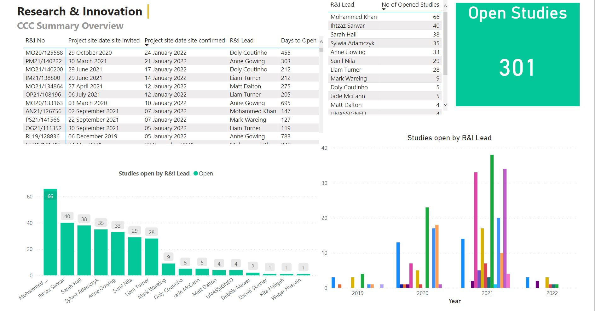
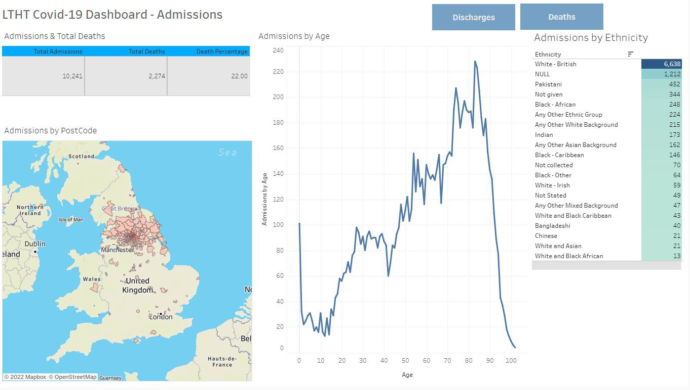
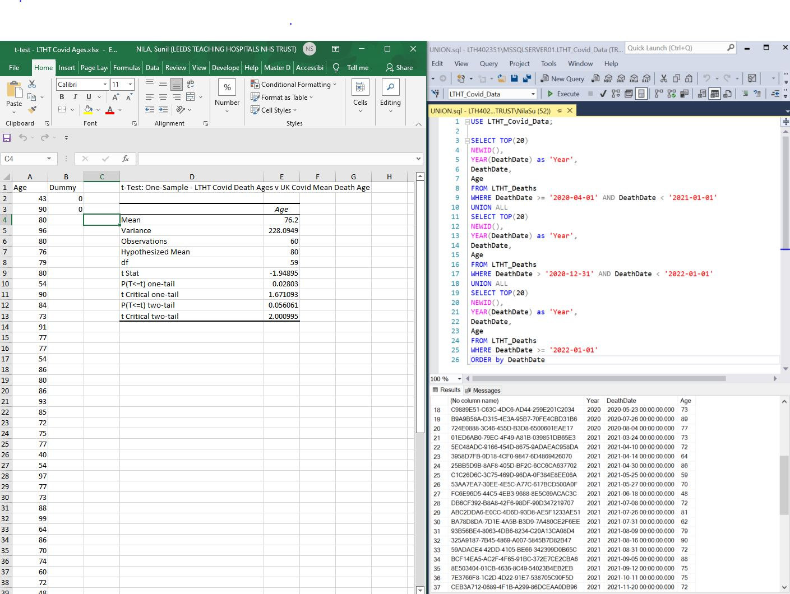
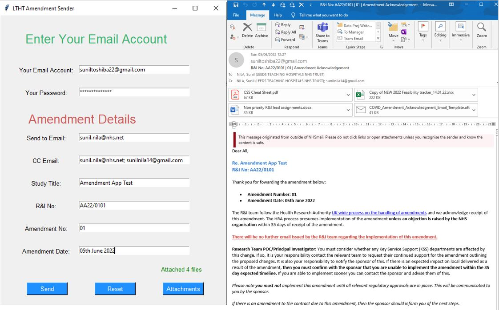
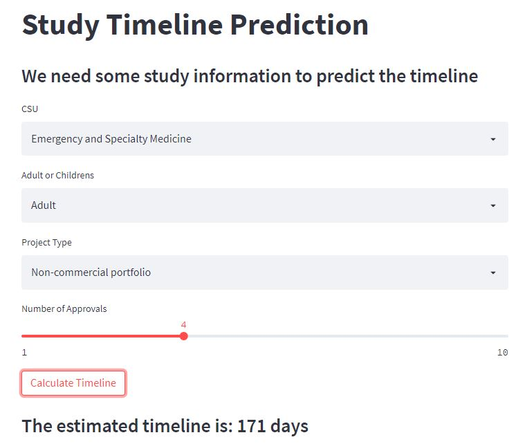
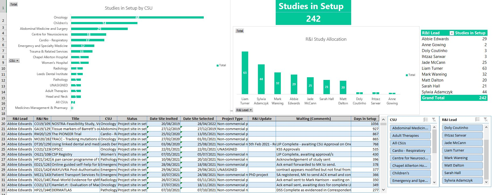

Covid-19 Analysis for Leeds Teaching Hospitals. The analysis looks
at key demographics of Covid-19 related patient data using SQL
Server and encompasses foundational to advanced SQL skills and
data cleaning practices.

Using the LTHT Covid-19 patient demographics analysis, I have
created dashboards within Tableau to visuale the key findings.

To see if the LTHT Covid-19 death age ranges are in line with the
UK Covid-19 mean death range of 80 I conduct a T-test. I take the
age ranges from years 2020 until 2022 using SQL Server, generating
a random sample of 20 for each year to be used for a T-test within
Excel.

This project aims to automate the Research & Innovation daily work
processes. This app takes user input and attachments in order to
our email our stakeholders study amendment confirmations, this
task at present is completed manually and our team process around
20 per day. The application automates this task, eliminating error
and allows for the process to be complete faster and in a more
streamlined fashion as opposed to the current process. The
application is built in Python, using the library Tkinter for the
user interface.

Within R&I our team are often asked by internal and external
stakeholders how long a study will take to open once in setup. Our
team cannot answer this is it is dependent upon a number of
variables from the approvals associated with the study that need
to be reviewed by clinical leads, to the pro-activeness of the
team leading on the study. The timeline can take 2 month to over a
year dependent on the variables described. I comprised open study
data from two research systems used at LTHT; OneForm to gather
approval metrics and EDGE to retrieve study information asociated
with the approval metrics. I amalgamated the two datasets within
SQL Server based on the unique identifier for a given study. With
the historic open study data, I was able to develop a Machine
Learning model within Google Collabs to be able to predict the
timeline of a study based on the following variables the user
inputs; Clinical Service Unit(A&E, Cancer, Radiology etc), the
number of clinical approvals required, type of study(PHD, internal
study, external commerical study) and whether the study is for
Children or Adults. A user interface for the ML Model was built
using the Python library Streamlit. The app is hosted on a Heroku
webserver so that members of R&I can use the app when they need a
timeline for a study.

Taking the data used to develop R&I Dashboards within PowerBI, I
developed similar dashboards visualising staff performance and
metrics for studies in setup and opened studies. Being able to
replicate and develop dashboards and visualisations within
different tools and software allows for me to learn new skills and
build upon pre-existing projects that I have created.